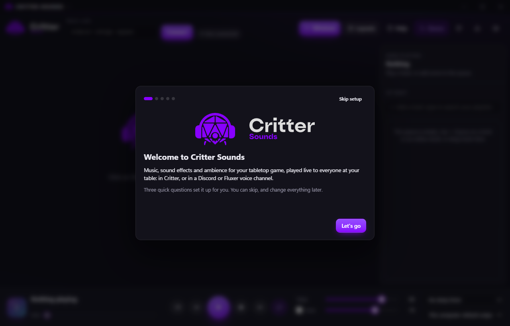
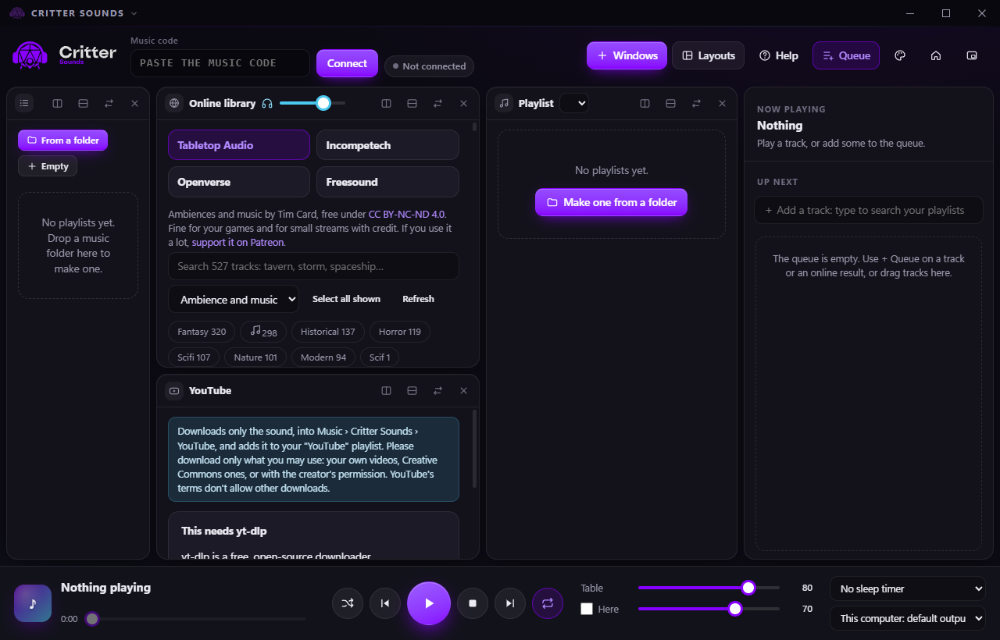

Music, sound effects and ambience for your tabletop game, played from your computer to everyone at the table: in Critter, or in a Discord or Fluxer voice channel.
It plays from your computer and streams to every player, so there's nothing to upload and no limit on tracks.
Playlists from your folders, a queue, fades and crossfades.
Sound pads with automatic icons and tags; keys 1 to 9 play them and the music dips underneath.
Soundscapes: a node editor for living backgrounds, like rain that comes and goes, rendered to seamless loops.
Effects such as Tavern next door, Underwater, Cave and Old gramophone, applied on each player's side.
Discord and Fluxer bots that play the same mix in a voice channel.
YouTube and web pages: keep just the sound of a video, or send any page's audio to the table.

Your layout, your way
A canvas of windows you split, dock and resize, with ready layouts for running a game or preparing one.
Soundscape nodes
Noise, samples, LFOs, triggers and effects you patch with cables, and hear change as you edit. Add your own nodes in JavaScript.
Scenes
A playlist plus its effects and volume, started with a crossfade: from the tavern to the fight in one click.
Session log
Every track, pad and scene is logged with its time, and appears as small notes in Critter's chat.
Even, never louder
Effects are loudness-matched, so they never make the music louder than it was. Any player can turn them off.
Guided from the start
A short setup, a quick tour and a full tour, and a guided first soundscape that builds the sound of the sea.

Online library
Free music, credited.
Browse and search free music and sound effects inside the app. Preview it, queue it, make it a pad or save it to play offline. Each track keeps its credit, and players see it.
Source
What's there
License
Tabletop Audio
~520 ten-minute ambiences and music
CC BY-NC-ND 4.0
Incompetech
~1,440 pieces by Kevin MacLeod
CC BY 4.0
Openverse
Freesound effects, Jamendo, ccMixter, Wikimedia
Shown on each result
Freesound
600,000+ sound effects (free API key)
Shown on each result
How it connects
One code, and the table hears it.
Critter Sounds joins your Critter lobby and streams straight to each player over WebRTC. Only an app with the right key can play to your table.
Open your table
Start a lobby in Critter. In the bottom bar, the owner opens Music to find the table's music code.
Paste the code
Paste it into Critter Sounds and press Connect. The code looks like ABCDEF-KEY12-34567: the lobby, then the key.
Play
Tracks, pads and soundscapes reach every player with their credits. Each player sets their own volume.
Playing in a voice channel instead? Open the Bots window, paste your Discord or Fluxer bot's token and pick a channel.
Download
Get Critter Sounds.
For whoever runs the music. Plays from your computer to the table, Discord or Fluxer.
The installer isn't code-signed yet, so Windows SmartScreen may warn the first time: choose More info › Run anyway. Every version is on the Releases page.